01</>
Front-End Development
Modern component-based and responsive interface development.
- React.js / Next.js
- Redux / Redux Toolkit
- HTML5 / CSS3
- Tailwind CSS / Bootstrap
| SABAHAT ATTA · SOFTWARE DEVELOPMENT |
React.js · Next.js · Redux · Node.js · Django · Spring Boot · PostgreSQL · REST APIs · AWS
Full-Stack Developer with over 5 years of professional experience in web and mobile application development, application support, troubleshooting, system integration, deployment, and software maintenance. Skilled in JavaScript/TypeScript, React.js, Next.js, Node.js, PHP, Python, SQL databases, and API integration.
| ABOUT ME |
My work spans modern front-end development, back-end frameworks, APIs, databases, cloud tooling, testing, and production support across web and mobile solutions.
I have hands-on experience in debugging, root-cause analysis, software testing, third-party integrations, application configuration, technical documentation, and user support, alongside strong problem-solving, communication, and cross-functional collaboration.
| TECHNICAL SKILLS |
Modern component-based and responsive interface development.
Server-side development across JavaScript, Python, PHP and Java ecosystems.
Relational, NoSQL and caching technologies used across development work.
API development, system integration, third-party services and technical documentation tooling.
Cloud deployment, version control, containers and delivery automation.
Testing, troubleshooting, maintenance, support and reliability practices across the software lifecycle.
Programming breadth backed by core data-structure and algorithm knowledge.
Current AI-focused technical areas and intelligent-system foundations.
Coding-practice and competitive-programming platforms.
| PROFESSIONAL EXPERIENCE |
XingaBots · Application Support & Systems Integration
Project-Based
| FEATURED DEVELOPMENT PROJECTS |
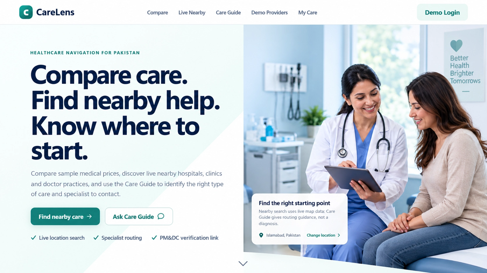
Developed a full-stack healthcare platform for comparing medical service prices, discovering nearby hospitals and clinics, booking appointments, and guiding users toward appropriate care and specialists through location-based provider discovery.
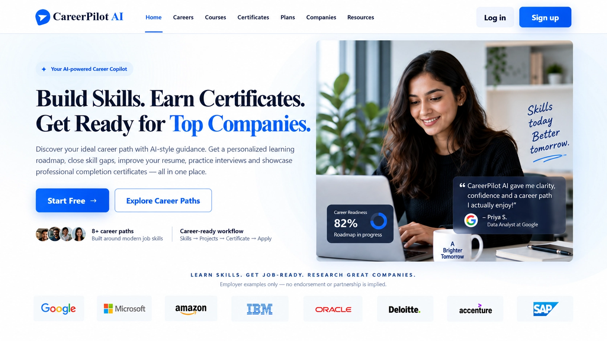
Built an AI-powered career development platform that analyzes resumes and career goals, identifies skill gaps and job-role compatibility, and provides personalized learning roadmaps, course and certification pathways, interview preparation, and career recommendations.
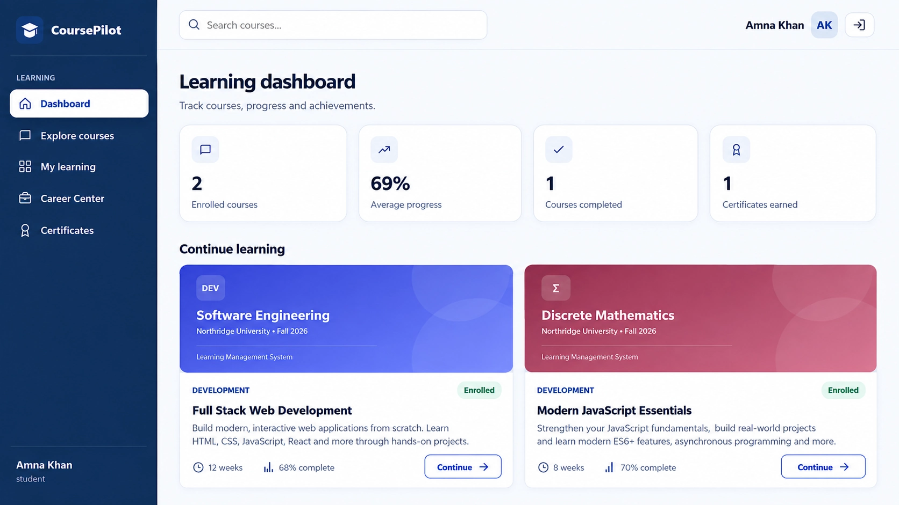
Built a full-stack learning management platform with user authentication, course discovery and enrollment, personalized learning dashboards, progress tracking, interactive quizzes with automated scoring, career guidance features, and certificate generation for successful learners.
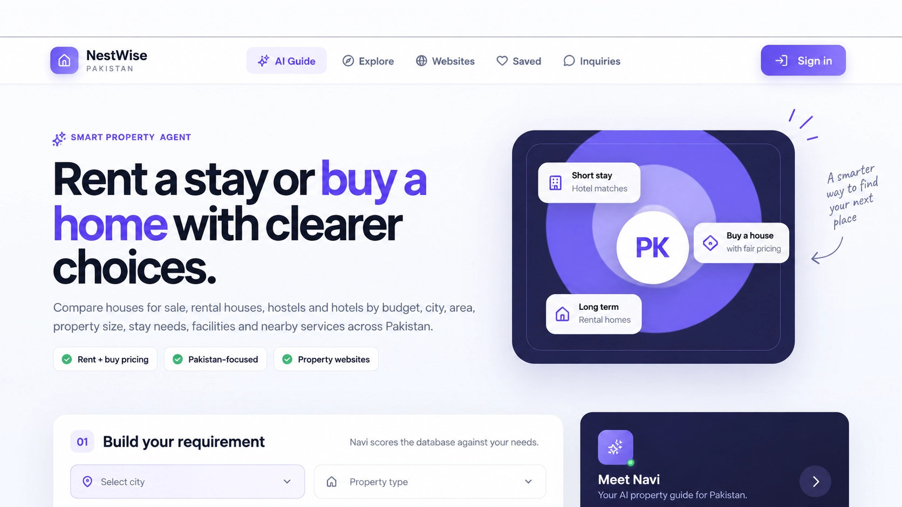
Built a full-stack Pakistan-focused property and accommodation discovery platform for houses, rental homes, hostels, and hotels, with intelligent property matching, budget and location filtering, authentication, saved listings, inquiries, and nearby-area information.
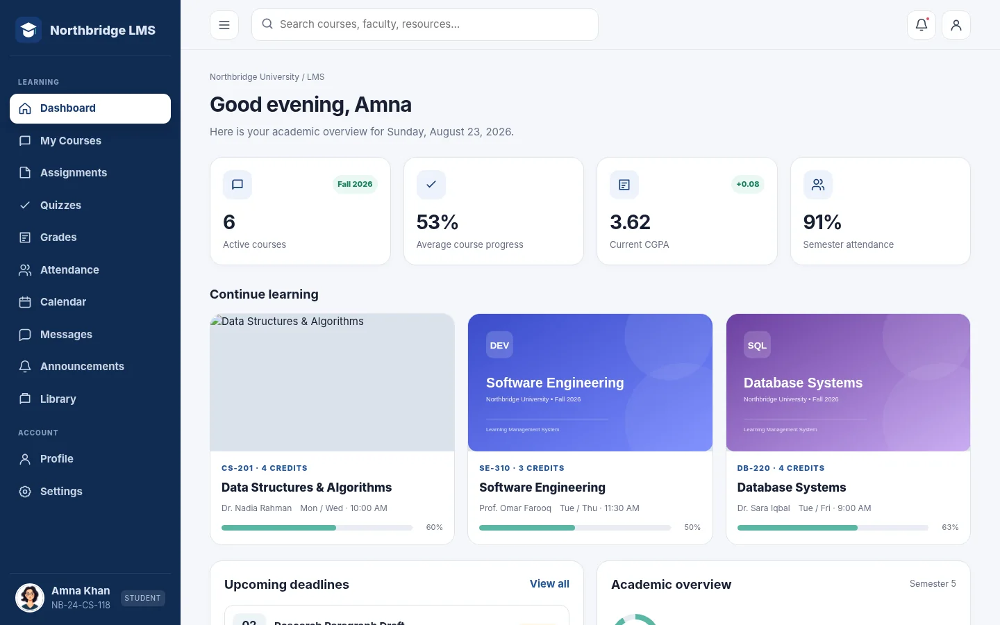
Built a role-based university learning management system for students, instructors, and administrators, covering courses, assignments, quizzes, examination marks, grades, attendance, calendars, messaging, announcements, digital resources, and instructor grading workflows.
| ADDITIONAL LIVE PROJECTS |
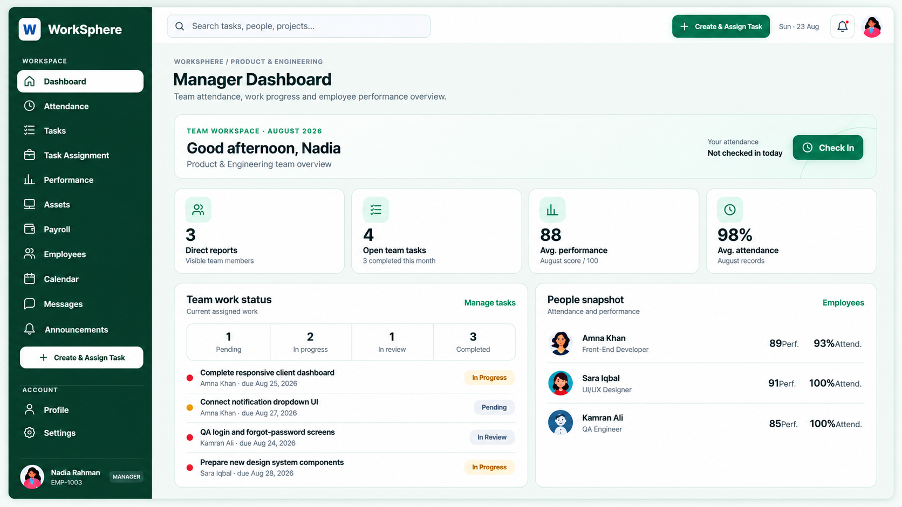
Role-based workforce platform for attendance, task assignment, payroll, performance reviews, company assets, messaging, and management dashboards.
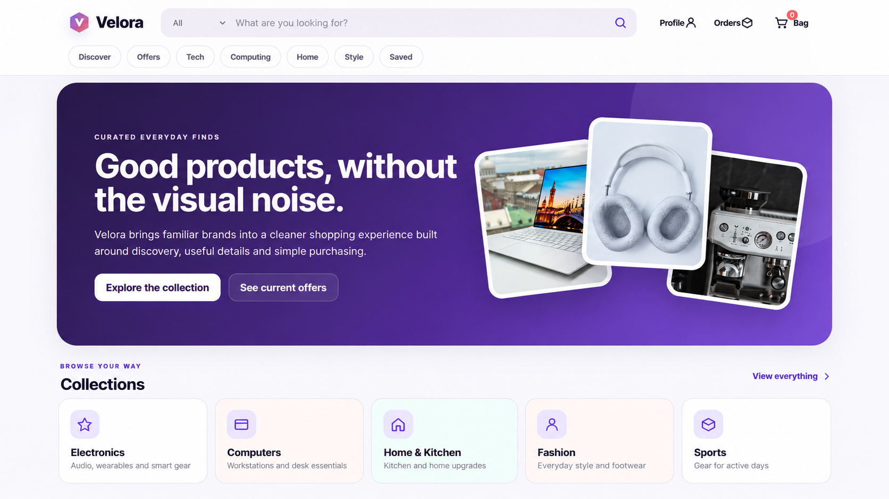
Responsive marketplace with product discovery, search and filtering, saved items, shopping bag, checkout, order history, and account preferences.
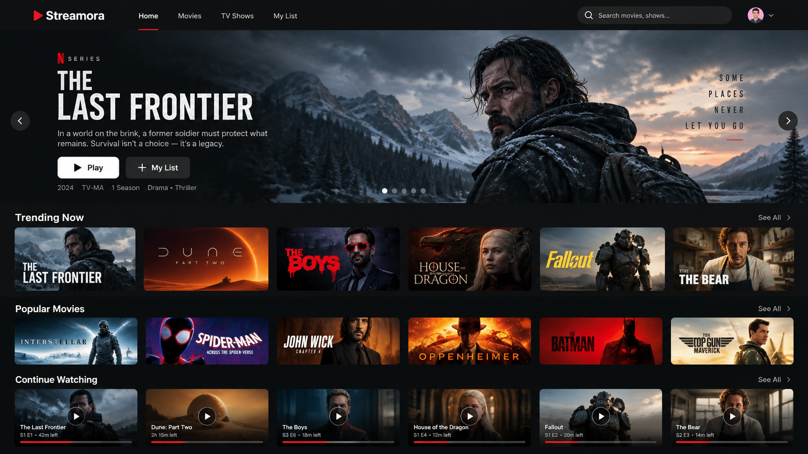
Multi-profile streaming experience with watchlists, recommendations, Continue Watching, search, notifications, local playback, and kids-friendly filtering.
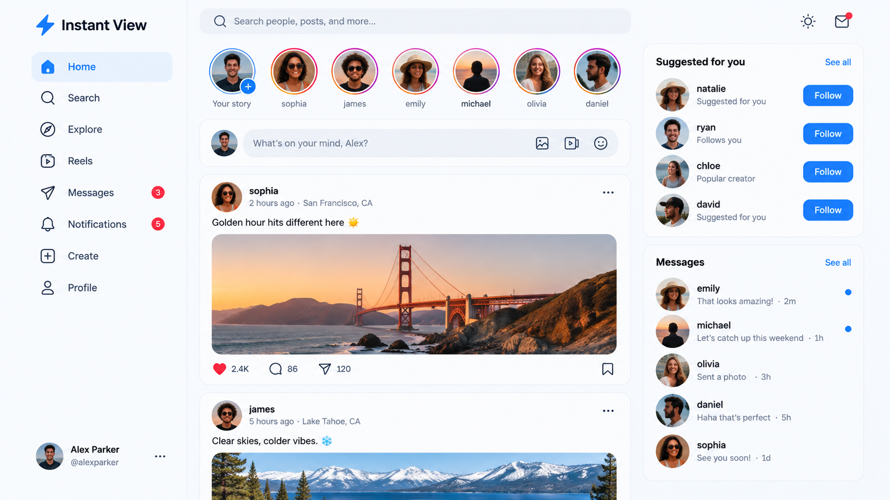
Social application with authentication, posts, reactions, followers, messaging, notifications, saved content, multi-photo publishing, and short-form video.
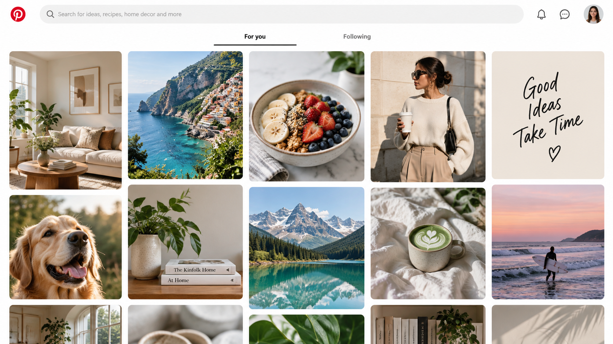
Masonry-style visual discovery application with boards, saved content, creator profiles, search, comments, messaging, notifications, and image-based publishing.
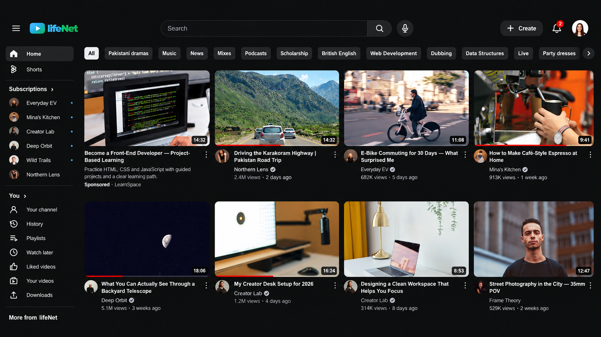
Video-content platform with recommendations, Shorts, subscriptions, search, viewing history, Watch Later, liked videos, uploads, and comments.
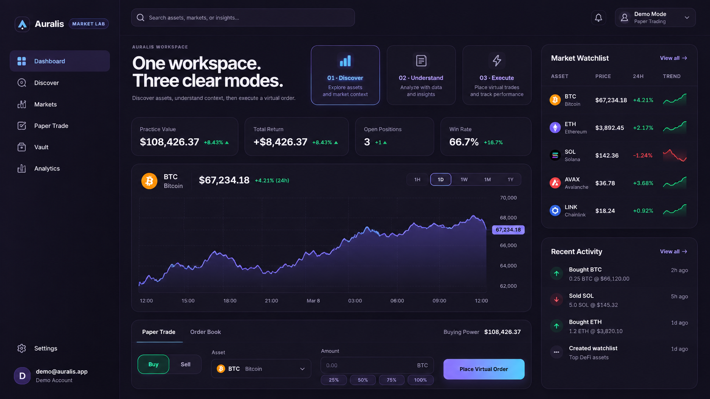
Crypto paper-trading workspace with market discovery, virtual balances, watchlists, simulated orders, portfolio tracking, and trading activity management.
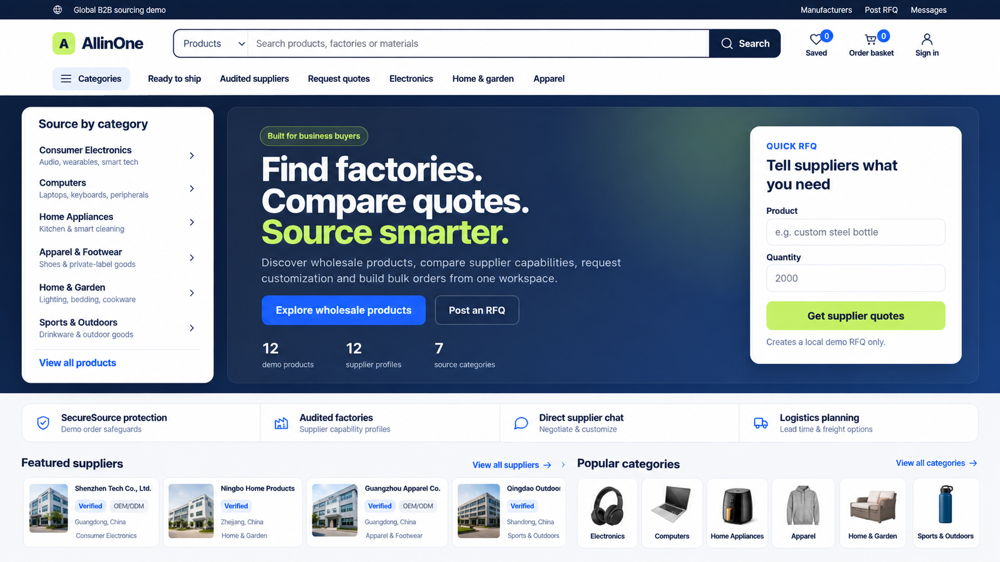
B2B sourcing marketplace with supplier and product discovery, MOQ and tier pricing, RFQs, messaging, bulk cart, checkout, and order management.
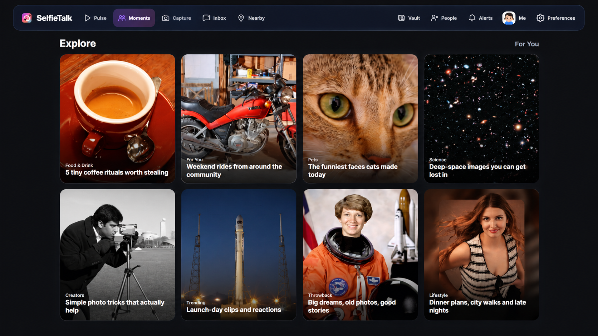
Interactive social-camera application with Capture, Inbox, Moments, Vault, Nearby discovery, user profiles, media sharing, and social interactions.
| LIVE WEBSITE PORTFOLIO |
| ACADEMIC & TECHNICAL WORK |
From computer vision and MATLAB to databases, web development and programming, these projects show the range of systems explored throughout my academic work.
Final-year project implementing a software-based skin cancer detection system.
Brain Tumor, Skin Condition, Breast Cancer, and Human Body Shape & Size Detection.
Academic website project designed and implemented for traffic police services.
Database solution developed using Microsoft Access and Oracle.
Database design combined with a line-following algorithm implementation.
Participated in a university Speed Programming Competition in 2019, demonstrating fast problem-solving under time constraints.
| EDUCATION |
Allama Iqbal Open University (AIOU)
IslamabadAir University
Islamabad, PakistanUniversity of Wah
Wah Cantt, Pakistan| CONTACT ME |
Open to Full-Stack and software development opportunities involving web and mobile applications, APIs, system integration, cloud/DevOps, software testing, deployment, maintenance and technical problem solving.